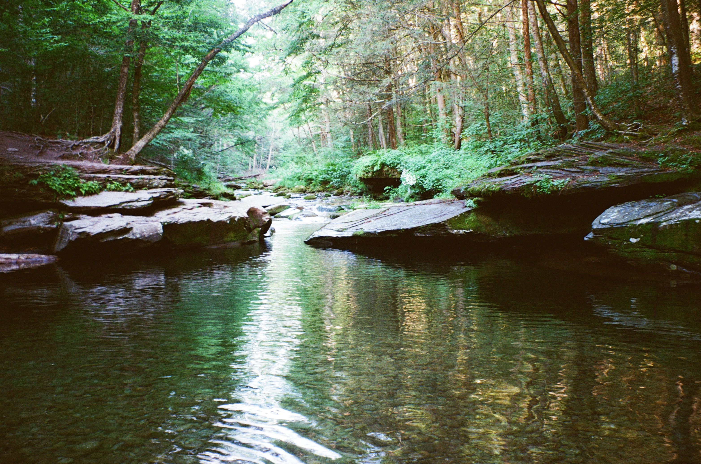
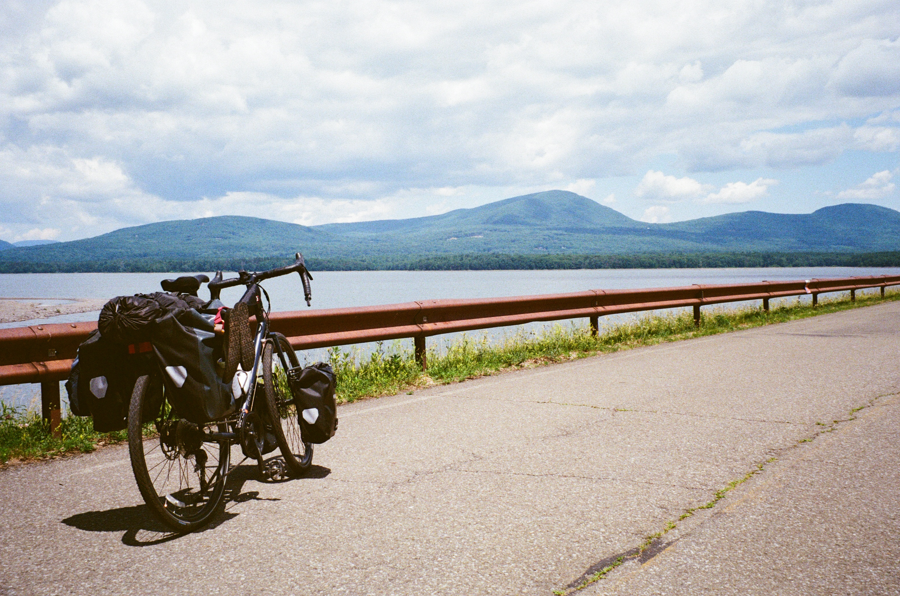

In June of 2026, Alex and I finally got back to bikepacking. We had been planning something for a while, so after a few intra-city warms ups -- notably to Jacob Riis beach and Coney Island -- we decided it was time to get out there for real.
We started searching for a place that would be reachable on a one-nighter, but far enough where you still have to earn it. Minnewaska state park was an early contender, but after more digging we found a blog post about the Peekamoose valley. In a post very similar to this one, we found a very promsising rout which seemed to promise a more remote campsite and a top notch swimming hole.
Some further online research revealed that the hole had become pretty overcrowded in recent years, and the NYS Parks system had started imposing permit requirements for both the campsite and the swimming hole. I hoped that this would keep the crowds down, but was a bit concerned about the condition we were going to find it in.
Our route would be a big loop from the Poughkeepsie train station, approaching from the south on Saturday and then continuing north on Sunday to take advantage of some downhills. We more or less followed this route from Eli's blog which I'll link here. His route is solid and the blog as a whole is worth checking out.
On Saturday we set off on the Walkway Over the Hudson, then continued west on the Empire State Trail until our charted course directed us onto the local roads--what we didn't know at the time was that our route was a bit outdated, and we could have stayed on the path much longer (more on that later). We reached Rosendale pretty quickly and made a note of a cool Tressle Bridge spanning high above us.
Most of the day was spent winding through suburban towns along Berme Road while cloud cover kept us cool and dropped a few light rain showers.
By about 3PM(?) we made it to our supply stop in Napanoch. Our first introduction to the town was the Ulster Prison, where, after riding closer to investigate a surprisingly castle-like main building, a security guard promptly pulled up and told us to scoot. We proceeded to the Walmart about a half mile down the road to grab our lunch, dinner, and Sunday's breakfast. Here, our less-than-welcoming visit to Napanoch continued and we were happy to move on to our final 20 mile climb into the Catskills.
This was definitely the hardest part of the ride gicen the amount of climbing we had to do, but still wasn't too bad. Just a few miles from our side we found a supply store with a camper out back heating up a meal. He told us that he had come from the North and was basically doing our route in reverse. He also said he was primitive camping in the woods nearby, which I thought you werent allowed to do anymore given the crackdown on permits, so that's something to look into later.
Around 5pm we finally rolled into the campsite and dropped our gear before heading to the blue hole. We were pleasantly surprised to find only a few others there, and the freezing water was a welcome refreshment after all that riding. We took a dip and ate our sandwiches, then rode back to the campsite.
The campsite itself was very solid. It had bear bins to hold our stuff and plenty of space to spread out. Alex noticed a couple of pointed spears that someone had carved from decently large branches. We joked about them at first, but then we actually did see a bear--the first time I've seen one BEFORE going to sleep. That cut our firewood hunt short, so we lit up some kindling, drank our whiskey, and went to bed.
The next day we packed up and rode back for a morning swim. This time, we jumped off the rock overtop (only a few feet). Our butts were sore but we climbed up out of the valley and were rewarded with a miles-long downhill. For that reason I definitely recommend doing the south-to-north loop like we did. The way home was a lot more rural, and hot. There were a few moments when it felt like we might not get back until much later than I anticipated.

The turning point, though, was when we got back to Rosendale and discovered that the Tressle Bridge we had been admiring on our way up was actually part of the Empire State Rail Trail. not only that, but we could also take that trail--hard backed gravel under a shady tree canopy--all the way back to New Paltz. From there, we reencountered our hardcore friend from the supply shack in Peakamoose, who said we had just enough time to make the next train out of Poughkeepsie. We formed a paceline of the three of us: Alex and I clipped in and loaded up with bike shorts on, and our new friend cruising along in tevas with just a small front set of panniers.
In the end, we all made it back in time for the train. Overall, it was a great weekend and I'm excited to do it again. I think next time I'll remember to pack a bit lighter, but other than that I think we nailed it.